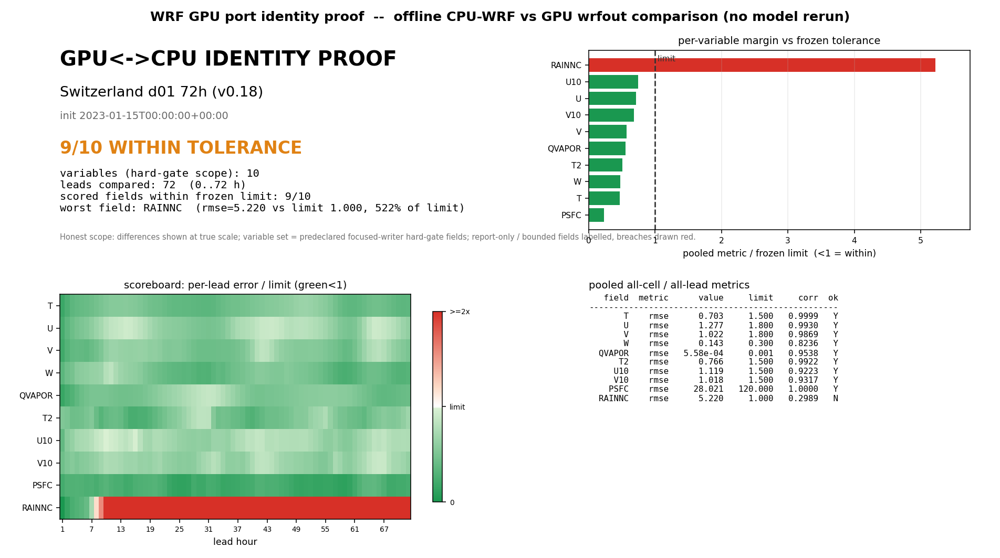
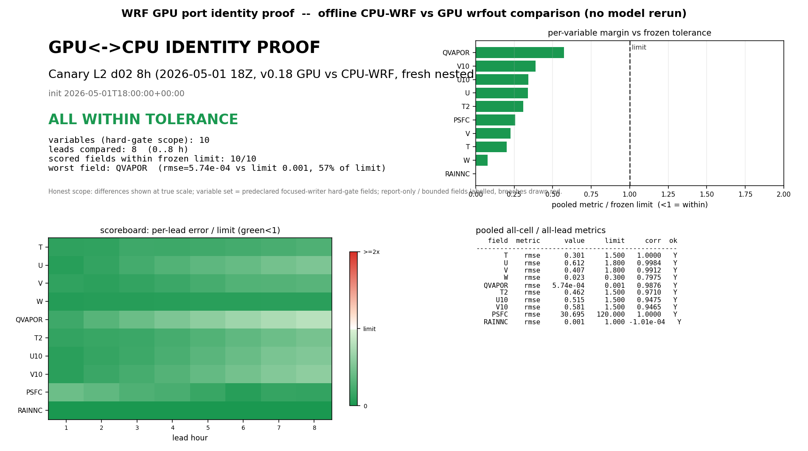

Validation against the original WRF
Every release of wrf_gpu is checked against the original Fortran WRF: both models run from the same inputs, and every hourly output field is compared over the whole grid with limits that were fixed before the comparison. The reference is always CPU-WRF, never an older version of this project.
How the checks work¶
For each test case we run CPU-WRF and wrf_gpu from identical wrfinput and
wrfbdy files and compare each output field at each forecast hour over all grid cells. A
field passes when its root-mean-square difference stays within its limit at every hour. The limits
were fixed in advance and are never loosened afterwards:
| Field | Limit (RMSE) |
|---|---|
| 2 m temperature (T2), air temperature (T) | 1.5 K |
| 10 m wind (U10, V10) | 1.5 m/s |
| Wind on model levels (U, V) | 1.8 m/s |
| Vertical wind (W) | 0.30 m/s |
| Surface pressure (PSFC) | 120 Pa |
| Accumulated rain (RAINNC) | 1 mm |
| Water vapour mixing ratio (QVAPOR) | 0.001 kg/kg |
| Grid, terrain and other static fields | exact match |
About 60 fields have such limits; the other output fields are compared and reported without one. A run must also be complete, with every expected field and hour present and no NaN or infinite values. Nothing is masked to hide a failure.
Results are close to WRF, not bit-identical. GPUs round floating-point arithmetic differently, and weather is chaotic, so tiny differences grow with forecast length. That is why the limits are statistical and why long runs are compared with the spread between two CPU-WRF runs started from slightly different conditions. These comparisons test agreement with WRF; they do not claim better or worse forecast skill against observations.
v0.4.0 results¶

- Default physics: passed 24-hour comparisons on five real cases: three Tenerife three-domain cases, a two-domain Canary Islands case and the Swiss Alps example.
- 66 physics configurations: each passed its comparison, 65 over 24 hours and one (Goddard radiation) over six hours. Together they cover every option marked validated on the physics and namelist pages.
- Real bugs found: the comparisons caught errors in how several schemes were called. For example, an error in how the Tiedtke cumulus scheme was called made the accumulated-rain difference peak at 1.1 mm; after the fix it peaks at 0.03 mm.
The v0.4.0 validation report has the method in detail, the table of all 66 configurations and the list of fixes, each with its evidence.
v0.3.3: 72-hour forecasts¶
v0.3.3 was compared over 72 hours: six Tenerife runs from three dates (including runs with slightly different starting conditions and a repeat compile) and a winter-storm case, plus the 24-hour Swiss case. Most fields stayed within their limits for all 72 hours. Accumulated rain and some wind and cloud-ice fields went over their limits late in some runs; most of these late differences are about as large as those between two CPU-WRF runs started from slightly different conditions, which points to the chaotic growth of tiny differences. Every hour of every run is plotted, failures included.
Earlier result: v0.3.0 release gate¶
The release gate covers 6 Tenerife cases × 3 domains × 24 h: 375 output fields compared with original CPU-WRF, 62 of them with fixed per-variable limits, 0 bound failures, all compared values finite. Beyond 24 h, a complete six-case comparison on an earlier internal build of v0.3.0 (identical except the Noah-MP albedo/snow-aging fix) exceeds those limits for some 1 km wind/rain fields in two of the six 72 h cases; every affected frame is listed in the validation report. Output integrity: a strict check flags a few trace-level fields (ice/snow traces, canopy dew onset, one known writer field); every exception is listed in the validation report. Station verification is done separately by an operational forecasting project in the Canary Islands.
Earlier releases¶
The sealed one-hour all-physics acceptance replay completed d01-d09 with 27/27 expected
outputs and all 177,497,511 numeric values finite. Every domain passed all 102 compared fields
under the frozen v0.14 comparator/tolerance chain. Canonical proof SHA-256:
f8c64f85e16f083e2c0c6509c6c9e2d2bcc64ec6da6f313eb08714af638c0916.
No tolerance, fixture, CPU truth, or model output changed between the preserved false-red and
corrected scorer passes.
On the v0.18 Switzerland 72 h cell-identity proof (9/10 with one bounded miss), wrf_gpu closed with 9 of 10 hard-gate
fields within frozen tolerance and the full dynamics/thermodynamics core cell-for-cell
identical (r ≈ 0.99–1.00). On the nested Canary L2 d02 8 h proof it was
10/10 within frozen tolerance.

RAINNC. Dynamics/thermodynamics core cell-for-cell identical.

The v0.18 red field — RAINNC — in plain terms¶
The single out-of-envelope field is accumulated precipitation RAINNC
(5.22 mm vs a tight 1.0 mm bound over 72 h). Its physics is correct — the individual
rain / ice / snow processes match WRF to ~1e-7 (oracle-green). What does not close to the 1.0 mm
bound is the accumulated total: precipitation placement is the most chaotically-sensitive
field in any weather model, so legitimate differences down to floating-point operation order move a
shower a grid cell over, and summed over 72 h that grows to a few-mm cell-by-cell difference.
RAINNC is a derived running counter that does not feed back into the
forecast; the prognostic fields that drive skill — wind, temperature, and moisture (QVAPOR, which
passes) — are all within tolerance. It is drawn red and carried, not painted green.
The open credibility gate — 24–72 h forecast skill¶
v0.3.0 closes its 24-hour six-case Tenerife release gate; v0.23.4 closed two specific frozen scopes: a 24-hour real-case chain and the one-hour all-physics nine-nest acceptance fixture. The broader seasonal and configuration-independent 24 h/72 h forecast-skill equivalence (T2/U10/V10) vs CPU-WRF remains open. See Boundaries.
Earlier statistical-equivalence (TOST) framing is superseded by this per-cell identity proof; no "TOST PASS" / "statistically-proven equivalence" is claimed.
Default numerics across releases¶
The stability > identity priority does not forbid a real correctness repair.
v0.23.4 intentionally changes results relative to v0.23.3: it restores WRF moist/scalar transport
ordering and balances Thompson ice mass/number before sedimentation. Ice-sensitive trajectories
must therefore be revalidated or rebaselined; no cross-release byte-identity claim is made.
For historical context, v0.23 was numerically equivalent to v0.22.2:
- The dynamical core is untouched — net dynamics diff v0.22.2→v0.23 is 0 lines.
- The only default-on changes to the compiled program (P0 radiation flux-slice, P3 flat-2-dom fusion) are proven CPU bit-identical (sha256 before==after).
- With XLA autotune held fixed (same-cache control) the default path is bit-identical
to v0.22.2 (
max_abs 0.0, 0/178 leaves). - Across two independent cold compiles it matches v0.22.2 within the autotune floor — a self-control confirms the v0.23-vs-v0.22.2 field differences over the 1 h canary are indistinguishable from v0.22.2 differing from its own second cold compile.
The only difference is the same run-to-run GPU autotune nondeterminism v0.22.2 already exhibits
against itself. No masking, clamps, or nan_to_num.
Reproduce it yourself¶
The identity proof is CPU-only and never touches the GPU. Given a matching CPU/GPU
wrfout pair:
python3 scripts/build_identity_proof_plots.py \
--cpu-dir "$CPU_DIR" --gpu-dir "$GPU_DIR" \
--domain d01 --init "2023-01-15T00:00:00+00:00" \
--case-id switzerland_d01_72h --region-label "Switzerland d01 72h" \
--tolerance-json proofs/v014/grid_delta_atlas/tolerance_manifest_candidate.json \
--proof-dir proofs/<case>/identity_proof \
--asset-dir docs/assets/<case>/identity_proofEvery claim on this page has a proof object under proofs/ in the repository, and
the equivalence demo (scripts/equivalence_demo.py) and reproducibility harness
(scripts/verify_reproducibility.sh) run on CPU. See also docs/VALIDATION.md
and docs/REPRODUCIBILITY.md.